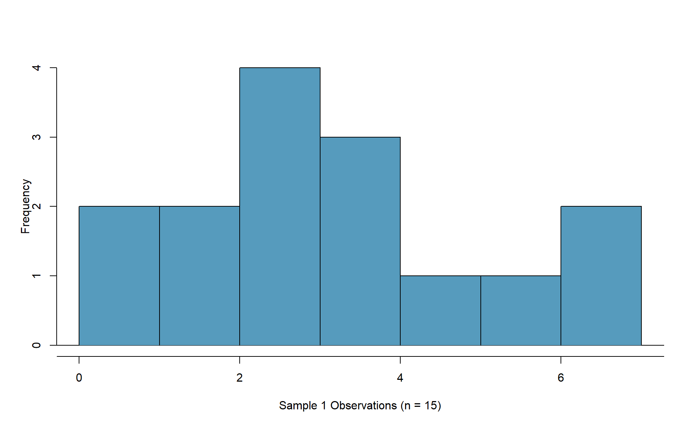
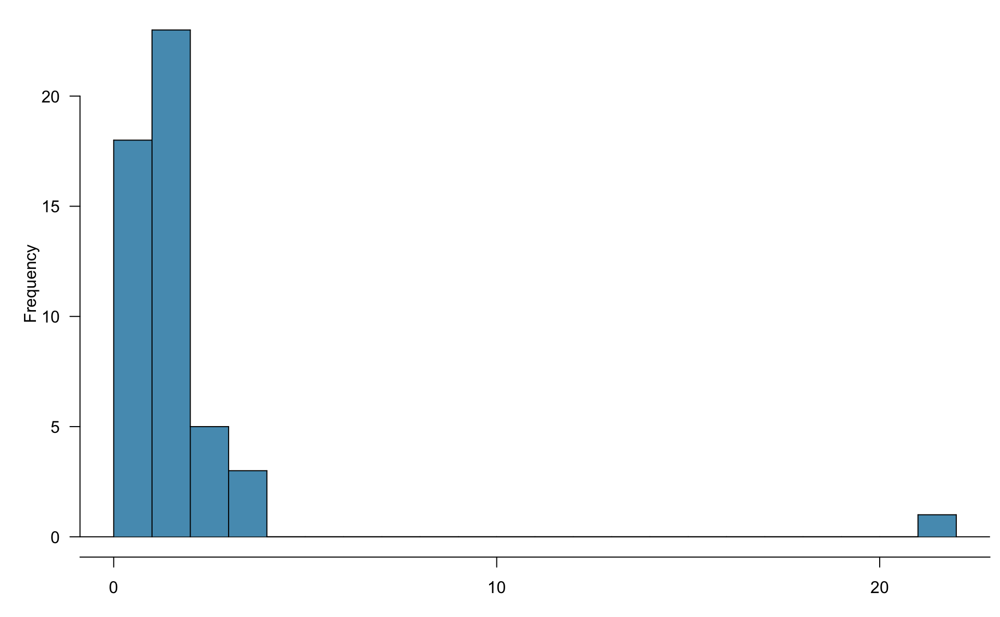
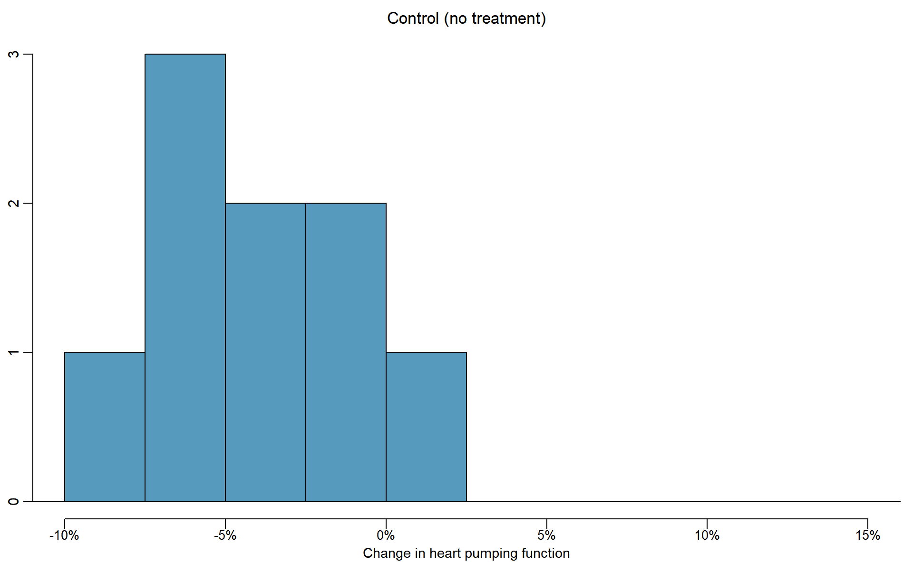
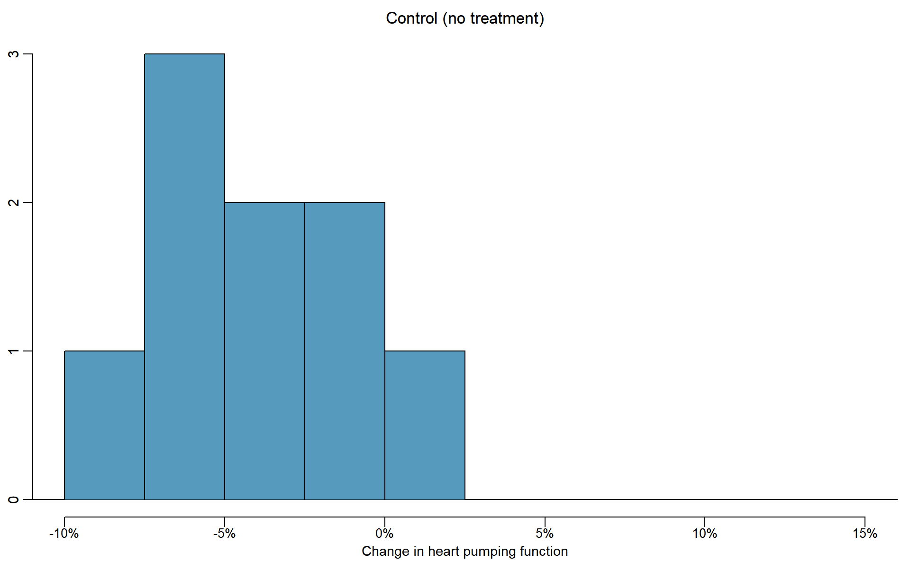

Chapter 6 Inference for quantitative data
Focusing now on statistical inference for quantitative data, again, we will revisit and expand upon the foundational aspects of hypothesis testing from Section 5.1.
The important data structure for this chapter is a quantitative response variable (that is, the outcome is numerical). The three data structures we detail are:
- one quantitative response variable, summarized by a single mean,
- one quantitative response variable which is a difference across a pair of observations, summarized by a paired mean difference, and
- a quantitative response variable broken down by a binary explanatory variable, summarized by a difference in means.
When appropriate, each of the data structures will be analyzed using the two methods introduced in Section 5.1: simulation-based and theory-based.
As we build on the inferential ideas, we will visit new foundational concepts in statistical inference. One key new idea rests in estimating how the sample mean (as opposed to the sample proportion) varies from sample to sample; the resulting value is referred to as the standard error of the mean. We will also introduce a new important mathematical model, the \(t\)-distribution (as the foundation for the \(t\)-test).To summarize a quantitative response variable, we focus on the sample mean (instead of, for example, the sample median or the range of the observations) because of the well-studied mathematical model which describes the behavior of the sample mean. The sample mean will be calculated in one group, two paired groups, and two independent groups. We will not cover mathematical models which describe other statistics, but the bootstrap and randomization techniques described below are immediately extendable to any function of the observed data. The techniques described for each setting will vary slightly, but you will be well served to find the structural similarities across the different settings.
6.1 One mean
Notation.
- \(n\) = sample size
- \(\hat{x}\) = sample mean
- \(s\) = sample standard deviation
- \(\mu\) = population mean
- \(\sigma\) = population standard deviation
In this section, we explore the situation where we focus on a single mean of a quantitative variable, and we introduce a new simulation method, bootstrapping. Bootstrapping is best suited for modeling studies where the data have been generated through random sampling from a population.
If the goal is to produce a range of possible values for a population value, then in an ideal world, we would sample data from the population again and recompute the sample mean.
Then we could do it again.
And again.
And so on until we have a good sense of the variability of our original estimate.
The ideal world where sampling data is free or extremely cheap is almost never the case, and taking repeated samples from a population is usually impossible.
So, instead of using a “resample from the population” approach, bootstrapping uses a “resample from the sample” approach.
Sometime the mathematical theory for how an estimate varies is well-known; this is the case for the sample proportion as seen in Section 5.3.3 and the sample mean seen later in this Chapter. However, some statistics don’t have simple theory for how they vary, and bootstrapping provides a computational approach for providing interval estimates for almost any population parameter.
6.1.1 Bootstrap confidence interval for \(\mu\)
As an employer who subsidizes housing for your employees, you need to know the average month rental price for a three bedroom flat in Edinburgh. In order to walk through the example more clearly, let’s say that you are only able to randomly sample five Edinburgh flats (if this were a real example, you would surely be able to take a much larger sample size, possibly even being able to measure the entire population!).
Figure 6.1 presents the details of the random sample of observations where the monthly rent of five flats has been recorded.

Figure 6.1: 5 flats
The sample average monthly rent of £ 1648 is a first guess at the price of three bedroom flats. However, as a student of statistics, you understand that one sample mean based on a sample of five observations will not necessarily equal the true population average rent for all three bedroom flats in Edinburgh. Indeed, you can see that the observed rent prices vary with a standard deviation of £ 340.232, and surely the average monthly rent would be different if a different sample of size five had been taken from the population. Fortunately, we can use bootstrapping to approximate the variability of the sample mean from sample to sample.
Variability of the statistic
As with the inferential ideas covered in Chapter 5, the inferential analysis methods in this chapter are grounded in quantifying how one data set differs from another when they are both taken from the same population. It doesn’t make sense to take repeated samples from the same population because if you have the means to take more samples, a larger sample size will benefit you more than the exact same sample twice. Instead, with bootstrapping, we measure how the samples behave under an estimate of the population—the sample. By taking repeated samples from the estimated population, the variability from sample to sample can be observed.
Figure 6.2 shows how the unknown original population can be estimated by using many duplicates of the sample. This estimated population—consisting of infinitely many copies of the original sample—can then be used to generate bootstrapped resamples.

Figure 6.2: Using the original sample of five Edinburgh flats to generate an estimated population, which is then used to generate bootstrapped resamples. This process of generating a bootstrapped sample is equivalent to sampling five flats from the original sample, with replacement.
It turns out that in practice, it is very difficult for computers to work with an infinite population (with the same proportional breakdown as in the sample). However, there is a physical and computational model which produces an equivalent bootstrap distribution of the sample mean in a computationally efficient manner. Consider the observed data to be a bag of five marbles. Each marble corresponds to one flat, and is labeled by the rent price. By drawing the marbles out of the bag with replacement (after we draw one, we put it back before drawing another), we depict the same sampling process as was done with the infinitely large estimated population. Note in Figure 6.2 that when sampling the original observations, a particular data point may end up in the new sample one time, several times, or not at all.
In Figure 6.2, the repeated bootstrap resamples are obviously different both from each other and from the original sample. Since the bootstrap resamples are taken from the same (estimated) population, these differences are due entirely to natural variability in the sampling procedure. By summarizing each of the bootstrap resamples (here, using the sample mean), we see, directly, the variability of the sample mean, \(\bar{x}\), from sample to sample. The distribution of \(\hat{x}_{boot}\) for the Edinburgh flats is shown in Figure 6.3.
Figure 6.3: Distribution of bootstrapped means from 1,000 simulated bootstrapped samples generated by sampling with replacement from our original sample of five Edinburgh flats. The histogram provides a sense for the variability of the average rent values from sample to sample for samples of size 5.
The bootstrapped average rent prices vary from £ 1250 to £ 1995 (with a small observed sample of size 5, a bootstrap resample can sometimes, although rarely, include only repeated measurements of the same observation).
Bootstrapping.
- Take a random sample of size \(n\) from the original sample, with replacement. This is called a bootstrapped resample.
- Record the sample mean (or statistic of interest) from the boostrapped resample. This is called a bootstrapped statistic.
- Repeat steps (1) and (2) 1000s of times.
Use the standard deviation of the distribution of bootstrapped statistics as your estimate for the standard deviation of the sampling distribution of sample means—the amount we would expect a sample mean to typically deviate from the population mean.
Since this bootstrapped standard deviation of statistics is an estimate of the standard deviation of sample means—and not the actual value, which is unknown—we call this a standard error of the sample mean.Due to theory that is beyond this text, we know that the bootstrap means \(\bar{x}_{boot}\) vary around the original sample mean, \(\bar{x}\), in a similar way to how different sample (i.e., different data sets which would produce different \(\bar{x}\) values) means vary around the true parameter \(\mu\). Therefore, an interval estimate for \(\mu\) can be produced using the \(\bar{x}_{boot}\) values themselves.The bootstrap confidence interval for \(\mu\), the population mean rent price for three bedroom flats in Edinburgh, is found by locating the middle 95% (for a 95% confidence interval) of the bootstrapped sample means in Figure @ref{fig:flatsbsmean}.
95% Bootstrap confidence interval for a population mean \(\mu\).
The 95% bootstrap confidence interval for the parameter \(\mu\) can be obtained directly using the ordered values \(\bar{x}_{boot}\) values. Consider the sorted \(\bar{x}_{boot}\) values, and let \(\bar{x}_{boot, 0.025}\) be the 2.5% value and \(\bar{x}_{boot, 0.025}\) be the 97.5% value. The 95% confidence interval is given by:You can find confidence intervals of difference confidence levels by changing the percent of the distribution you take, e.g., locate the middle 90% of the bootstrapped statistics for a 90% confidence interval.
Using Figure 6.3, find the 90% and 95% confidence intervals for the true mean monthly rental price of a three bedroom flat in Edinburgh.
A 90% confidence interval is given by £ 1429 to £ 1876. The conclusion is that we are 90% confident that the true average rental price for three bedroom flats in Edinburgh lies somewhere between £ 1429 and £ 1876.
A 95% confidence interval is given by £ 1389.75 to £ 1916. The conclusion is that we are 90% confident that the true average rental price for three bedroom flats in Edinburgh lies somewhere between £ 1389.75 and £ 1916.Bootstrap percentile confidence interval for \(\sigma\)
Suppose that the research question at hand seeks to understand how variable the rental price of the flats are in Edinburgh. That is, your interest is no longer in the average rental price of the flats but in the standard deviation of the rental prices of all three bedroom flats in Edinburgh, \(\sigma\). You may have already realized that the sample standard deviation, \(s\), will work as a good point estimate for the parameter of interest: the population standard deviation, \(\sigma\). The point estimate of the five observations is calculated to be \(s =\) £ 340.23. While \(s =\) £ 340.23 might be a good guess for \(\sigma\), we prefer to have an interval Although there is a mathematical model which describes how \(s\) varies from sample to sample, the mathematical model will not be presented in this text. But even without the mathematical model, bootstrapping can be used to find a confidence interval for the parameter \(\sigma\).
Describe the bootstrap distribution for the standard deviation shown in Figure 6.4.
The distribution is skewed left and centered near £ 340.23, which is the point estimate from the original data. Most observations in this distribution lie between £ 0 and £ 408.1.
Using Figure 6.4, find and interpret a 90% confidence interval for the population standard deviation for three bedroom flat prices in Edinburgh.^[By looking at the percentile values in Figure 6.4, the middle 90% of the bootstrap standard deviations are given by the 5 percentile (£ 153.9) and 95 percentile (£ 385.6). That is, we are 90% confident that the true standard deviation of rent prices is between £ 153.9 and £ 385.6.
Note, the problem was set up as 90% to indicate that there was not a need for a high level of confidence (such a 95% or 99%). A lower degree of confidence increases potential for error, but it also produces a more narrow interval. ]Figure 6.4: The original Edinburgh data is bootstrapped 1,000 times. The histogram provides a sense for the variability of the standard deviation of the rent values from sample to sample.
Bootstrapping is not a solution to small sample sizes!
The example presented above is done for a sample with only five observations. As with analysis techniques that build on mathematical models, bootstrapping works best when a large random sample has been taken from the population. Bootstrapping is a method for capturing the variability of a statistic when the mathematical model is unknown (it is not a method for navigating small samples). As you might guess, the larger the random sample, the more accurately that sample will represent the target population.
6.1.2 Theory-based inferential methods for \(\bar{x}\)
As with the sample proportion, the variability of the sample mean is well described by the mathematical theory given by the Central Limit Theorem. Similar to how we can model the behavior of the sample proportion \(\hat{p}\) using a normal distribution, the sample mean \(\bar{x}\) can also be modeled using a normal distribution when certain conditions are met. However, because of missing information about the inherent variability in the population, a \(t\)-distribution is used in place of the standard normal when performing hypothesis test or confidence interval analyses.
The sample mean tends to follow a normal distribution centered at the population mean, \(\mu\), when certain conditions are met. Additionally, we can compute a standard error for the sample mean using the population standard deviation \(\sigma\) and the sample size \(n\).
When we collect a sufficiently large sample of \(n\) independent observations from a population with mean \(\mu\) and standard deviation \(\sigma\), the sampling distribution of \(\bar{x}\) will be nearly normal with \[\begin{align*} &\text{Mean}=\mu &&\text{Standard Error }(SE) = \frac{\sigma}{\sqrt{n}} \end{align*}\]
Before diving into confidence intervals and hypothesis tests using \(\bar{x}\), we first need to cover two topics:
- When we modeled \(\hat{p}\) using the normal distribution, certain conditions had to be satisfied. The conditions for working with \(\bar{x}\) are a little more complex, and below, we will discuss how to check conditions for inference using a mathematical model.
- The standard error is dependent on the population standard deviation, \(\sigma\). However, we rarely know \(\sigma\), and instead we must estimate it. Because this estimation is itself imperfect, we use a new distribution called the \(t\)-distribution to fix this problem, which we discuss in
Evaluating the two conditions required for modeling \(\bar{x}\)
Two conditions are required to apply the Central Limit Theorem for a sample mean \(\bar{x}\):
Independence. The sample observations must be independent, The most common way to satisfy this condition is when the sample is a simple random sample from the population. If the data come from a random process, analogous to rolling a die, this would also satisfy the independence condition.
Normality. When a sample is small, we also require that the sample observations come from a normally distributed population. We can relax this condition more and more for larger and larger sample sizes. This condition is obviously vague, making it difficult to evaluate, so next we introduce a couple rules of thumb to make checking this condition easier.
General rule: how to perform the normality check
There is no perfect way to check the normality condition, so instead we use two general rules:
- \(\mathbf{n < 30}\): If the sample size \(n\) is less than 30
and there are no clear outliers in the data,
then we typically assume the data come from
a nearly normal distribution to satisfy the
condition.
- \(\mathbf{n \geq 30}\): If the sample size \(n\) is at least 30 and there are no particularly extreme outliers, then we typically assume the sampling distribution of \(\bar{x}\) is nearly normal, even if the underlying distribution of individual observations is not.
In this first course in statistics, you aren’t expected to develop perfect judgement on the normality condition. However, you are expected to be able to handle clear cut cases based on the rules of thumb.130
Consider the following two plots that come from simple random samples from different populations. Their sample sizes are \(n_1 = 15\) and \(n_2 = 50\).
Are the independence and normality conditions met in each case?
Each samples is from a simple random sample of its respective population, so the independence condition is satisfied. Let’s next check the normality condition for each using the rule of thumb.
The first sample has fewer than 30 observations, so we are watching for any clear outliers. None are present; while there is a small gap in the histogram on the right, this gap is small and 20% of the observations in this small sample are represented in that far right bar of the histogram, so we can hardly call these clear outliers. With no clear outliers, the normality condition is reasonably met.
The second sample has a sample size greater than 30 and includes an outlier that appears to be roughly 5 times further from the center of the distribution than the next furthest observation. This is an example of a particularly extreme outlier, so the normality condition would not be satisfied.
In practice, it’s typical to also do a mental check to evaluate whether we have reason to believe the underlying population would have moderate skew (if \(n < 30\)) or have particularly extreme outliers \((n \geq 30)\) beyond what we observe in the data. For example, consider the number of followers for each individual account on Twitter, and then imagine this distribution. The large majority of accounts have built up a couple thousand followers or fewer, while a relatively tiny fraction have amassed tens of millions of followers, meaning the distribution is extremely skewed. When we know the data come from such an extremely skewed distribution, it takes some effort to understand what sample size is large enough for the normality condition to be satisfied.
Introducing the \(t\)-distribution
In practice, we cannot directly calculate the standard error for \(\bar{x}\) since we do not know the population standard deviation, \(\sigma\). We encountered a similar issue when computing the standard error for a sample proportion, which relied on the population proportion, \(p\). Our solution in the proportion context was to use sample value in place of the population value when computing the standard error. We’ll employ a similar strategy for computing the standard error of \(\bar{x}\), using the sample standard deviation \(s\) in place of \(\sigma\): \[\begin{align*} SE = \frac{\sigma}{\sqrt{n}} \approx \frac{s}{\sqrt{n}} \end{align*}\] This strategy tends to work well when we have a lot of data and can estimate \(\sigma\) using \(s\) accurately. However, the estimate is less precise with smaller samples, and this leads to problems when using the normal distribution to model \(\bar{x}\).
We’ll find it useful to use a new distribution for inference calculations called the \(t\)-distribution. A \(t\)-distribution, shown as a solid line in Figure 6.5, has a bell shape. However, its tails are thicker than the normal distribution’s, meaning observations are more likely to fall beyond two standard deviations from the mean than under the normal distribution.
The extra thick tails of the \(t\)-distribution are exactly the correction needed to resolve the problem of using \(s\) in place of \(\sigma\) in the \(SE\) calculation.
Figure 6.5: Comparison of a \(t\)-distribution and a normal distribution.
The \(t\)-distribution is always centered at zero and has a single parameter: degrees of freedom. The degrees of freedom {degrees of freedom (\(df\))!\(t\)-distribution} describes the precise form of the bell-shaped \(t\)-distribution. Several \(t\)-distributions are shown in Figure 6.6 in comparison to the normal distribution.
In general, we’ll use a \(t\)-distribution with \(df = n - 1\) to model the sample mean when the sample size is \(n\). That is, when we have more observations, the degrees of freedom will be larger and the \(t\)-distribution will look more like the standard normal distribution; when the degrees of freedom is about 30 or more, the \(t\)-distribution is nearly indistinguishable from the normal distribution.
Figure 6.6: The larger the degrees of freedom, the more closely the \(t\)-distribution resembles the standard normal distribution.
Degrees of freedom: df
The degrees of freedom describes the shape of the \(t\)-distribution. The larger the degrees of freedom, the more closely the distribution approximates the normal model.
When modeling \(\bar{x}\) using the \(t\)-distribution, use \(df = n - 1\).The \(t\)-distribution allows us greater flexibility than
the normal distribution when analyzing numerical data.
In practice, it’s common to use statistical software,
such as R, Python, or SAS for these analyses.
In R, the function used for calculating probabilities under a \(t\)-distribution is pt() (which should seem similar to previous R functions, pnorm() and pchisq()).
Don’t forget that with the \(t\)-distribution, the degrees of freedom must always be specified!
No matter the approach you choose, apply your method using the examples below to confirm your working understanding of the \(t\)-distribution.
What proportion of the \(t\)-distribution with 18 degrees of freedom falls below -2.10?
Just like a normal probability problem, we first draw the picture in Figure 6.7 and shade the area below -2.10.
Using statistical software, we can obtain a precise value: 0.0250.Figure 6.7: The \(t\)-distribution with 18 degrees of freedom. The area below -2.10 has been shaded.
A \(t\)-distribution with 20 degrees of freedom is shown in the top panel of Figure 6.8. Estimate the proportion of the distribution falling above 1.65.
With a normal distribution, this would correspond to about 0.05, so we should expect the \(t\)-distribution to give us a value in this neighborhood. Using statistical software: 0.0573.
Figure 6.8: Top: The \(t\)-distribution with 20 degrees of freedom, with the area above 1.65 shaded. Bottom: The \(t\)-distribution with 2 degrees of freedom, with the area further than 3 units from 0 shaded.
A \(t\)-distribution with 2 degrees of freedom is shown in the bottom panel of Figure 6.8. Estimate the proportion of the distribution falling more than 3 units from the mean (above or below).
With so few degrees of freedom, the \(t\)-distribution will give a more notably different value than the normal distribution. Under a normal distribution, the area would be about 0.003 using the 68-95-99.7 rule. For a \(t\)-distribution with \(df = 2\), the area in both tails beyond 3 units totals 0.0955. This area is dramatically different than what we obtain from the normal distribution.
One sample \(t\)-confidence intervals
Let’s get our first taste of applying the \(t\)-distribution in the context of an example about the mercury content of dolphin muscle. Elevated mercury concentrations are an important problem for both dolphins and other animals, like humans, who occasionally eat them.

Figure 6.9: A Risso’s dolphin. Photo by Mike Baird, www.bairdphotos.com
Observed data
We will identify a confidence interval for the average mercury content in dolphin muscle using a sample of 19 Risso’s dolphins from the Taiji area in Japan. The data are summarized in Table 6.1. The minimum and maximum observed values can be used to evaluate whether or not there are clear outliers.
| \(n\) | \(\bar{x}\) | s | minimum | maximum |
|---|---|---|---|---|
| 19 | 4.4 | 2.3 | 1.7 | 9.2 |
Are the independence and normality conditions satisfied for this data set?
The observations are a simple random sample, therefore independence is reasonable. The summary statistics in Table 6.1 do not suggest any clear outliers, with all observations are within 2.5 standard deviations of the mean. Based on this evidence, the normality condition seems reasonable.
In the normal model, we used \(z^{\star}\) and the standard error to determine the width of a confidence interval. We revise the confidence interval formula slightly when using the \(t\)-distribution: \[\begin{align*} &\text{point estimate} \ \pm\ t^{\star}_{df} \times SE &&\to &&\bar{x} \ \pm\ t^{\star}_{df} \times \frac{s}{\sqrt{n}} \end{align*}\]
Using the summary statistics in Table 6.1, compute the standard error for the average mercury content in the \(n = 19\) dolphins.
We plug in \(s\) and \(n\) into the formula: \(SE = s / \sqrt{n} = 2.3 / \sqrt{19} = 0.528\).
The value \(t^{\star}_{df}\) is a cutoff we obtain based on the confidence level and the \(t\)-distribution with \(df\) degrees of freedom. That cutoff is found in the same way as with a normal distribution: we find \(t^{\star}_{df}\) such that the fraction of the \(t\)-distribution with \(df\) degrees of freedom within a distance \(t^{\star}_{df}\) of 0 matches the confidence level of interest.
When \(n = 19\), what is the appropriate degrees of freedom? Find \(t^{\star}_{df}\) for this degrees of freedom and the confidence level of 95%
The degrees of freedom is easy to calculate: \(df = n - 1 = 18\).
Using statistical software, we find the cutoff where the upper tail is equal to 2.5%: \(t^{\star}_{18} = 2.10\). The area below -2.10 will also be equal to 2.5%. That is, 95% of the \(t\)-distribution with \(df = 18\) lies within 2.10 units of 0.# use qt() to find the t-cutoff (with 95% in the middle)
qt(0.025, df = 18)
#> [1] -2.1
qt(0.975, df = 18)
#> [1] 2.1Degrees of freedom for a single sample.
If the sample has \(n\) observations and we are examining a single mean, then we use the \(t\)-distribution with \(df=n-1\) degrees of freedom.Compute and interpret the 95% confidence interval for the average mercury content in Risso’s dolphins.
We can construct the confidence interval as \[\begin{align*} \bar{x} \ \pm\ t^{\star}_{18} \times SE \quad \to \quad 4.4 \ \pm\ 2.10 \times 0.528 \quad \to \quad (3.29, 5.51) \end{align*}\] We are 95% confident the average mercury content of muscles in Risso’s dolphins is between 3.29 and 5.51 \(\mu\)g/wet gram, which is considered extremely high.
Finding a \(t\)-confidence interval for the mean, \(\mu\).
Based on a sample of \(n\) independent and nearly normal observations, a confidence interval for the population mean is \[\begin{align*} &\text{point estimate} \ \pm\ t^{\star}_{df} \times SE &&\to &&\bar{x} \ \pm\ t^{\star}_{df} \times \frac{s}{\sqrt{n}} \end{align*}\] where \(\bar{x}\) is the sample mean, \(t^{\star}_{df}\) corresponds to the confidence level and degrees of freedom \(df\), and \(SE\) is the standard error as estimated by the sample.Estimate the standard error of \(\bar{x} = 0.287\) ppm using the data summaries in the previous Guided Practice. If we are to use the \(t\)-distribution to create a 90% confidence interval for the actual mean of the mercury content, identify the degrees of freedom and \(t^{\star}_{df}\).
The standard error: \(SE = \frac{0.069}{\sqrt{15}} = 0.0178\).
Degrees of freedom: \(df = n - 1 = 14\).
Since the goal is a 90% confidence interval, we choose \(t_{14}^{\star}\) so that the two-tail area is 0.1: \(t^{\star}_{14} = 1.76\).# use qt() to find the t-cutoff (with 90% in the middle)
qt(0.05, df = 14)
#> [1] -1.76
qt(0.95, df = 14)
#> [1] 1.76One sample \(t\)-tests
Now that we’ve used the \(t\)-distribution for making a confidence intervals for a mean, let’s speed on through to hypothesis tests for the mean.
Is the typical US runner getting faster or slower over time? We consider this question in the context of the Cherry Blossom Race, which is a 10-mile race in Washington, DC each spring.
The average time for all runners who finished the Cherry Blossom Race in 2006 was 93.29 minutes (93 minutes and about 17 seconds). We want to determine using data from 100 participants in the 2017 Cherry Blossom Race whether runners in this race are getting faster or slower, versus the other possibility that there has been no change.
Figure 6.10: A histogram of time for the sample Cherry Blossom Race data.
When completing a hypothesis test for the one-sample mean, the process is nearly identical to completing a hypothesis test for a single proportion. First, we find the Z score using the observed value, null value, and standard error; however, we call it a T score since we use a \(t\)-distribution for calculating the tail area. Then we finding the p-value using the same ideas we used previously: find the one-tail area under the sampling distribution, and double it.
With both the independence and normality conditions satisfied, we can proceed with a hypothesis test using the \(t\)-distribution. The sample mean and sample standard deviation of the sample of 100 runners from the 2017 Cherry Blossom Race are 97.32 and 16.98 minutes, respectively. Recall that the sample size is 100 and the average run time in 2006 was 93.29 minutes. Find the test statistic and p-value. What is your conclusion?
To find the test statistic (T score), we first must determine the standard error: \[\begin{align*} SE = 16.98 / \sqrt{100} = 1.70 \end{align*}\] Now we can compute the T score using the sample mean (97.32), null value (98.29), and \(SE\): \[\begin{align*} T = \frac{97.32 - 93.29}{1.70} = 2.37 \end{align*}\] For \(df = 100 - 1 = 99\), we can determine using statistical software (or a \(t\)-table, see below) that the one-tail area is 0.01, which we double to get the p-value: 0.02.
Because the p-value is smaller than 0.05, we reject the null hypothesis. That is, the data provide strong evidence that the average run time for the Cherry Blossom Run in 2017 is different than the 2006 average. Since the observed value is above the null value and we have rejected the null hypothesis, we would conclude that runners in the race were slower on average in 2017 than in 2006.When using a \(t\)-distribution, we use a T score (same as Z score).
To help us remember to use the \(t\)-distribution, we use a \(T\) to represent the test statistic, and we often call this a T score. The Z score and T score are computed in the exact same way and are conceptually identical: each represents how many standard errors the observed value is from the null value.6.2 Paired mean difference
Notation.
- \(n_{diff}\) = sample size of differences in paired samples
- \(\hat{x}_{diff}\) = sample mean of differences in paired samples
- \(s_{diff}\) = sample standard deviation of differences in paired samples
- \(\mu_{diff}\) = population mean of differences in paired samples
- \(\sigma_{diff}\) = population standard deviation of differences in paired samples
Paired data represent a particular type of experimental structure where the analysis is somewhat akin to a one-sample analysis (see Section 6.1) but has other features that resemble a two-sample analysis (see Section 6.3). As with a two-sample analysis, quantitative measurements are made on each of two different levels of the explanatory variable. However, because the observational unit is paired across the two groups, the two measurements are subtracted such that only the difference is retained. Table 6.2 presents some examples of studies where paired designs were implemented.
| Observational unit | Comparison groups | Measurement | Value of interest |
|---|---|---|---|
| Car | Brand A vs Brand B | amount of tire tread after 1,000 miles | difference in tread |
| Textbook | UCLA vs Amazon | price of new text | difference in price |
| Individual person | Pre-course vs Post-course | exam score | difference in score |
Paired data.
Two sets of observations are paired if each observation in one set has a special correspondence or connection with exactly one observation in the other data set.6.2.1 Randomization test for \(H_0: \mu_d = 0\)
Consider an experiment done to measure whether tire brand A or tire brand B has longer wear. That is, after 1,000 miles on a car, which brand of tires has more tread, on average?
Observed data
The observed data represent 25 tread measurements taken on 25 tires of Brand A and 25 tires of Brand B. The study used a total of 25 cars, so on each car, one tire was of Brand A and one was of Brand B. Figure 6.11 presents the observed data. The Brand A manufacturer looks at the box plot below and says: > clearly the tread on Brand A tires is higher, on average, than the tread on Brand B tires after 1,000 miles of driving.
The Brand B manufacturer is skeptical and retorts:
> but with only 25 cars, it seems that the variability in road conditions (sometimes on tire hits a pothole, etc.) could be what leads to the small difference in average tread amount.
We’d like to be able to systematically distinguish between what manufacturer A sees in the plot and what manufacturer B sees in the plot. Fortunately for us, we have an excellent way to simulate the natural variability (from road conditions, etc.) that can lead to tires being worn at different rates.
Figure 6.11: Boxplots of the tire tread data and the brand of tire from which the original measurements came.
Variability of the statistic
A randomization test will identify whether the differences seen in the box plot below could have happened just by chance variability. As before, we will simulate the variability in the study under the assumption that the null hypothesis is true. In this study, the null hypothesis is that average tire tread wear is the same across Brand A and Brand B tires.
- \(H_0: \mu_A = \mu_B\), the average tread wear is the same for the two tire brands.
- \(H_A: \mu_A \ne \mu_B\), the average tread wear is different across the two tire brands.
Figure 6.12 describes how the tread values can be simulated under the null hypothesis. Remember, if the null hypothesis is true, it will not matter which brand is put on which tire because the overall tread wear will be the same across pairs.

Figure 6.12: process of randomizing across pairs.
After randomizing the tire brand to the tread measurements under the null hypothesis, a new boxplot summarizes the randomized data.
Figure 6.13 presents one randomization of the data.
Notice how the same two observations are linked by a grey line, but some of the tread values have been randomly assigned to the opposite tire brand than they were originally (while some are still connected to their original tire brands).
Figure 6.13: One randomization where the brand is randomly swapped (or not) across the two tread wear measurements from the same car.
Figure 6.14 presents yet another randomization of the data. Again, the same observations are linked by a grey line, and some of the tread values have been randomly assigned to the opposite tire brand than they were originally (while some are still connected to their original tire brands).
Figure 6.14: An additional randomization where the brand is randomly swapped (or not) across the two tread wear measurements from the same car.
Observed statistic vs. null statistics
By repeating the randomization process, we can create a distribution of the average of the differences in tire treads, as seen in Figure 6.16. As expected (because the differences were generated under the null hypothesis), the center of the histogram is zero. A line has been drawn at the observed difference which is nowhere near the differences simulated from natural variability by mixing up which the tire received brand A and which received brand B. Because the observed statistic is so far away from the natural variability of the randomized differences, we believe that there is a significant difference between brand A and brand B. Our conclusion is that the extra amount of average tire tread in brand A is due to more than just natural variability: we reject \(H_0\) and conclude that \(\mu_A > \mu_B\).

Figure 6.15: process of randomizing across pairs.
Figure 6.16: Histogram of 1000 differences with tire brand randomly assigned across the two observations per pair.
6.2.2 Bootstrap confidence interval for \(\mu_d\)
For both the bootstrap and the mathematical models applied to paired data, the analysis is virtually identical to the one-sample approach given in Section 6.1. The key to working with paired data (for bootstrapping and mathematical approaches) is to consider the measurement of interest to be the difference in measured values across the pair of observations.
Observed data
In an earlier edition of this textbook, we found that Amazon prices were, on average, lower than those of the UCLA Bookstore for UCLA courses in 2010. It’s been several years, and many stores have adapted to the online market, so we wondered, how is the UCLA Bookstore doing today?
We sampled 201 UCLA courses. Of those, 68 required books could be found on Amazon. A portion of the data set from these courses is shown in Figure 6.3, where prices are in US dollars.
| subject | course_num | bookstore_new | amazon_new | price_diff |
|---|---|---|---|---|
| American Indian Studies | M10 | 48.0 | 47.5 | 0.52 |
| Anthropology | 2 | 14.3 | 13.6 | 0.71 |
| Arts and Architecture | 10 | 13.5 | 12.5 | 0.97 |
| Asian | M60W | 49.3 | 55.0 | -5.69 |
Each textbook has two corresponding prices in the data set: one for the UCLA Bookstore and one for Amazon. When two sets of observations have this special correspondence, they are said to be paired.
Variability of the statistic
Following the example of bootstrapping the one-sample statistic, the observed differences can be bootstrapped in order to understand the variability of the average difference from sample to sample.

Figure 6.17: a figure similar to this but with differences in prices (books????) as the unit to bootstrap.
In Figure 6.18, two 99% confidence intervals for the difference in the cost of a new book at the UCLA bookstore compared with Amazon have been calculated. The bootstrap percentile interval is computing using the 0.5 percentile and 99.5 percentile bootstrapped differences and is found to be ($ 0.25, $ 7.87). The bootstrap SE interval is found by computing the SE of the bootstrapped differences (\(s_{diff} = \$1.64\)) and the normal multiplier of \(z^* = 2.58\). The averaged difference is \(\bar{x} = \$3.58\). The 99% confidence interval is: $ $3.58 2.58 $ 1.64 ($-0.65, $7.81)$. The confidence intervals seem to indicate that the UCLA bookstore price is, on average, higher than the Amazon price. However, if the analysis required a strong degree of certainty (e.g., 99% confidence), and the bootstrap SE interval was most appropriate (given a second course in statistics the nuances of the methods were investigated), the results of which book seller is higher is not well determined. That is, the 99% bootstrap SE interval gives potential for UCLA to be lower, on average, than Amazon (because of the possible negative values for the true mean difference in price).
#> # A tibble: 1 x 2
#> lower_ci upper_ci
#> <dbl> <dbl>
#> 1 0.108 8.32
#> # A tibble: 1 x 2
#> lower_ci upper_ci
#> <dbl> <dbl>
#> 1 -0.652 7.82Figure 6.18: Bootstrap distribution for the average difference in new book price at the UCLA bookstore versus Amazon. 99% confidence intervals are superimposed using blue (bootstrap percentile interval) and green (bootstrap SE interval) lines.
6.2.3 Mathematical model
Thinking about the differences as a single observation on an observational unit changes the paired setting into the one-sample setting. The mathematical model for the one-sample case is covered in Section 6.1.2.
Observed data
To analyze paired data, it is often useful to look
at the difference in outcomes of each pair of observations.
In the textbook data, we look at the differences
in prices, which is represented as the
price_difference variable
in the data set.
Here the differences are taken as
\[\begin{align*}
\text{UCLA Bookstore price} - \text{Amazon price}
\end{align*}\]
It is important that we always subtract using a consistent order; here Amazon prices are always subtracted from UCLA prices. The first difference shown in Table 6.3 is computed as \(47.97 - 47.45 = 0.52\). Similarly, the second difference is computed as \(14.26 - 13.55 = 0.71\), and the third is \(13.50 - 12.53 = 0.97\). A histogram of the differences is shown in Figure 6.19. Using differences between paired observations is a common and useful way to analyze paired data.
Figure 6.19: Histogram of the difference in price for each book sampled.
Variability of the statistic
To analyze a paired data set, we simply analyze the differences. We can use the same \(t\)-distribution techniques we applied in Section 6.1.2.
| \(n_{diff}\) | \(\bar{x}_{diff}\) | \(s_{diff}\) |
|---|---|---|
| 68 | 3.58 | 13.4 |
Set up a hypothesis test to determine whether, on average, there is a difference between Amazon’s price for a book and the UCLA bookstore’s price. Also, check the conditions for whether we can move forward with the test using the \(t\)-distribution.
We are considering two scenarios: there is no difference or there is some difference in average prices.
\(H_0\): \(\mu_{diff} = 0\). There is no difference in the average textbook price.
\(H_A\): \(\mu_{diff} \neq 0\). There is a difference in average prices.
Next, we check the independence and normality conditions. The observations are based on a simple random sample, so independence is reasonable. While there are some outliers, \(n = 68\) and none of the outliers are particularly extreme, so the normality of \(\bar{x}\) is satisfied. With these conditions satisfied, we can move forward with the \(t\)-distribution.
Observed statistic vs. null statistics
As mentioned previously, the methods applied to a difference will be identical to the one-sample techniques. Therefore, the full hypothesis test framework is given as an example.
Complete the hypothesis test started in the previous Example.
To compute the test compute the standard error associated with \(\bar{x}_{diff}\) using the standard deviation of the differences (\(s_{diff} = 13.42\)) and the number of differences (\(n_{diff} = 68\)): \[\begin{align*} SE_{\bar{x}_{diff}} = \frac{s_{diff}}{\sqrt{n_{diff}}} = \frac{13.42}{\sqrt{68}} = 1.63 \end{align*}\] The test statistic is the T-score of \(\bar{x}_{diff}\) under the null condition that the actual mean difference is 0: \[\begin{align*} T = \frac{\bar{x}_{diff} - 0} {SE_{x_{diff}}} = \frac{3.58 - 0}{1.63} = 2.20 \end{align*}\] To visualize the p-value, the sampling distribution of \(\bar{x}_{diff}\) is drawn as though \(H_0\) is true, and the p-value is represented by the two shaded tails in Figure 6.20.
The degrees of freedom is \(df = 68 - 1 = 67\). Using statistical software, we find the one-tail area of 0.0156. Doubling this area gives the p-value: 0.0312.
Because the p-value is less than 0.05, we reject the null hypothesis. Amazon prices are, on average, lower than the UCLA Bookstore prices for UCLA courses.Figure 6.20: Distribution of \(\bar{x}_{diff}\) under the null hypothesis of no difference. The observed average difference of 2.98 is marked with the shaded areas more extreme than the observed difference given as the p-value.
Create a 95% confidence interval for the average price difference between books at the UCLA bookstore and books on Amazon.^[Conditions have already verified and the standard error computed in a previous Example.
To find the confidence interval, identify \(t^{\star}_{67}\) using statistical software or the \(t\)-table (\(t^{\star}_{67} = 2.00)\), and plug it, the point estimate, and the standard error into the confidence interval formula: \[\begin{align*} \text{point estimate} \ \pm\ z^{\star} \times SE \quad\to\quad 3.58 \ \pm\ 2.00 \times 1.63 \quad\to\quad (0.32 6.84) \end{align*}\] We are 95% confident that Amazon is, on average, between $0.32 and $6.84 less expensive than the UCLA Bookstore for UCLA course books.]We have strong evidence that Amazon is, on average, less expensive. How should this conclusion affect UCLA student buying habits? Should UCLA students always buy their books on Amazon?^[The average price difference is only mildly useful for this question. Examine the distribution shown in Figure 6.19. There are certainly a handful of cases where Amazon prices are far below the UCLA Bookstore’s, which suggests it is worth checking Amazon (and probably other online sites) before purchasing. However, in many cases the Amazon price is above what the UCLA Bookstore charges, and most of the time the price isn’t that different. Ultimately, if getting a book immediately from the bookstore is notably more convenient, e.g. to get started on reading or homework, it’s likely a good idea to go with the UCLA Bookstore unless the price difference on a specific book happens to be quite large.
For reference, this is a very different result from what we (the authors) had seen in a similar data set from 2010. At that time, Amazon prices were almost uniformly lower than those of the UCLA Bookstore’s and by a large margin, making the case to use Amazon over the UCLA Bookstore quite compelling at that time. Now we frequently check multiple websites to find the best price.]
6.3 Difference of two means
Notation.
- \(n_1\), \(n_2\) = sample sizes of two independent samples
- \(\bar{x}_1\), \(\bar{x}_2\) = sample means of two independent samples
- \(s_1\), \(s_2\) = sample standard deviations of two independent samples
- \(\mu_1\), \(\mu_2\) = population means of two independent samples
- \(\sigma_1\), \(\sigma_2\) = population standard deviations of two independent samples
In this section we consider a difference in two population means, \(\mu_1 - \mu_2\), under the condition that the data are not paired. Just as with a single sample, we identify conditions to ensure we can use the \(t\)-distribution with a point estimate of the difference, \(\bar{x}_1 - \bar{x}_2\), and a new standard error formula.
The details for working through inferential problems in the two independent means setting are strikingly similar to those applied to the two independent proportions stetting. We first cover a randomization test where the observations are shuffled under the assumption that the null hypothesis is true. Then we bootstrap the data (with no imposed null hypothesis) to create a confidence interval for the true difference in population means, \(\mu_1 - \mu_2\). The mathematical model, here the \(t\)-distribution, is able to describe both the randomization test and the boostrapping as long as the conditions are met.
The inferential tools are applied to three different data contexts: determining whether stem cells can improve heart function, exploring the relationship between pregnant women’s smoking habits and birth weights of newborns, and exploring whether there is statistically significant evidence that one variation of an exam is harder than another variation. This section is motivated by questions like “Is there convincing evidence that newborns from mothers who smoke have a different average birth weight than newborns from mothers who don’t smoke?”
6.3.1 Randomization test for \(H_0: \mu_1 - \mu_2 = 0\)
An instructor decided to run two slight variations of the same exam. Prior to passing out the exams, she shuffled the exams together to ensure each student received a random version. Summary statistics for how students performed on these two exams are shown in Table 6.5 and plotted in Figure 6.21. Anticipating complaints from students who took Version B, she would like to evaluate whether the difference observed in the groups is so large that it provides convincing evidence that Version B was more difficult (on average) than Version A.
Observed data
| \(n\) | \(\bar{x}\) | s | minimum | maximum | |
|---|---|---|---|---|---|
| A | 58 | 75.1 | 13.9 | 44 | 100 |
| B | 55 | 72.0 | 13.8 | 38 | 100 |
Figure 6.21: Exam scores for students given one of three different exams.
Variability of the statistic
In Section 5.4.1, the variability of the statistic (previously: \(\hat{p}_1 - \hat{p}_2\)) was visualized after shuffling the observations across the two treatment groups many times. The shuffling process implements the null hypothesis model (that there is no effect of the treatment). In the exam example, the null hypothesis is that exam A and exam B are equally difficult, so the average scores across the two tests should be the same. If the exams were equally difficult, due to natural variability, we would sometimes expect students to do slightly better on exam A (\(\bar{x}_A > \bar{x}_B\)) and sometimes expect students to do slightly better on exam B (\(\bar{x}_B > \bar{x}_A\)). The question at hand is: does \(\bar{x}_A - \bar{x}_B=3.1\) indicate that exam A is easier than exam B.
Figure 6.22 shows the process of randomizing the exam to the observed exam scores. If the null hypothesis is true, then the score on each exam should represent the true student ability on that material. It shouldn’t matter whether they were given exam A or exam B. By reallocating which student got which exam, we are able to understand how the difference in average exam scores changes due only to natural variability. There is only one iteration of the randomization process in Figure 6.22, leading to one simulated difference in average scores.

Figure 6.22: The version of the test (A or B) is randomly allocated to the test scores, under the null assumption that the tests are equally difficult.
Building on Figure 6.22, Figure 6.23 shows the values of the simulated statistics \(\bar{x}_{1, sim} - \bar{x}_{2, sim}\) over 1000 random simulations. We see that, just by chance, the difference in scores can range anywhere from -10 points to +10 points.
Figure 6.23: Histogram of differences in means, calculated from 1000 different randomizations of the exam types.
Observed statistic vs. null statistics
The goal of the randomization test is to assess the observed data, here the statistic of interest is \(\bar{x}_A - \bar{x}_B=3.1\). The randomization distribution allows us to identify whether a difference of 3.1 points is more than one would expect by natural variability. By plotting the value of 3.1 on Figure 6.24, we can measure how different or similar 3.1 is to the randomized differences which were generated under the null hypothesis.
Figure 6.24: Histogram of differences in means, calculated from 1000 different randomizations of the exam types. The observed difference of 3.1 points is plotted as a vertical line, and the area more extreme than 3.1 is shaded to represent the p-value.
Approximate the p-value depicted in Figure 6.24, and provide a conclusion in the context of the case study.
Using software, we can find the number of shuffled differences in means that are less than the observed difference (of 3.14) is 19 (our of 1000 randomizations). So 10% of the simulations are larger than the observed difference. To get the p-value, we double the proportion of randomized differences which are larger than the observed difference, p-value = 0.2.
Previously, we specified that we would use \(\alpha = 0.01\). Since the p-value is larger than \(\alpha\), we do not reject the null hypothesis. That is, the data do not convincingly show that one exam version is more difficult than the other, and the teacher should not be convinced that she should add points to the Version B exam scores.#> # A tibble: 1 x 1
#> p_value
#> <dbl>
#> 1 0.1The large p-value and consistency of \(\bar{x}_A - \bar{x}_B=3.1\) with the randomized differences leads us to not reject the null hypothesis. Said differently, there is no evidence to think that one of the tests is easier than the other. One might be inclined to conclude that the tests have the same level of difficulty, but that conclusion would be wrong. The hypothesis testing framework is set up only to reject a null claim, it is not set up to validate a null claim. As we concluded, the data are consistent with exams A and B being equally difficult, but the data are also consistent with exam A being 3.1 points “easier” than exam B. The data are not able to adjudicate on whether the exams are equally hard or whether one of them is slightly easier. Indeed, conclusions where the null hypothesis is not rejected often seem unsatisfactory. However, in this case, the teacher and class are probably all relieved that there is no evidence to demonstrate that one of the exams is more difficult than the other.
6.3.2 Bootstrap confidence interval for \(\mu_1 - \mu_2\)
Does treatment using embryonic stem cells (ESCs) help improve heart function following a heart attack? Table 6.6 contains summary statistics for an experiment to test ESCs in sheep that had a heart attack. Each of these sheep was randomly assigned to the ESC or control group, and the change in their hearts’ pumping capacity was measured in the study. Figure 6.29 provides histograms of the two data sets. A positive value corresponds to increased pumping capacity, which generally suggests a stronger recovery. Our goal will be to identify a 95% confidence interval for the effect of ESCs on the change in heart pumping capacity relative to the control group.
Observed data
| \(n\) | \(\bar{x}\) | s | |
|---|---|---|---|
| ESCs | 9 | 3.50 | 5.17 |
| control | 9 | -4.33 | 2.76 |
The point estimate of the difference in the heart pumping variable is straightforward to find: it is the difference in the sample means. \[\begin{align*} \bar{x}_{esc} - \bar{x}_{control}\ =\ 3.50 - (-4.33)\ =\ 7.83 \end{align*}\]
Variability of the statistic
As we saw in Section 5.4.2, we will use bootstrapping to estimate the variability associated with the difference in sample means when taking repeated samples. In a method akin to two proportions, a separate sample is taken with replacement from each group (here ESCs and control), the sample means are calculated, and their difference is taken. The entire process is repeated multiple times to produce a bootstrap distribution of the difference in sample means (without the null hypothesis assumption).
Figure 6.26 displays the variability of the differences in means with the 90% percentile and SE CIs super imposed.
one we have the whole example, write up a bit about how the two different intervals are constructed (including the calculated value of the SE of the difference in means)
with the cars, we can compare two different cities. link each bootstrap sample, create the interval, etc.
Figure 6.25: first figure with the ? pop, then sample, then estimate of the pop. need to re-do with cars
Figure 6.26: Histogram of differences in means after 1000 bootstrap samples from each of the two groups. The observed difference is plotted as a black vertical line at 7.83. The blue and green lines provide the percentile bootstrap and SE boostrap confidence intervals, respectively, for the difference in true population means.
Choose one of the boostrap confidence intervals for the true difference in average pumping capacity, \(\mu_{esc} - \mu_{control}\). Does the interval show that there is a difference across the two treatments?
Because the 90% intervals above do not overlap zero (zero is never one of the bootstrapped differences, 95% or 99% intervals would have given the same conclusion!), we conclude tha the ESC treatment is significantly better with respect to heart pumping capacity than the treatment.
Beause the study is a randomized controled experiment, we can conclude that it is the treatment (ESC) whic is causing the change in pumping capacity.6.3.3 Mathematical model
6.3.3.1 \(t\)-test for \(\mu_1 - \mu_2\)
Observed data
A data set called ncbirths represents a random sample of 150 cases of mothers and their newborns in North Carolina over a year. Four cases from this data set are represented in Table 6.7. We are particularly interested in two variables: weight and smoke. The weight variable represents the weights of the newborns and the smoke variable describes which mothers smoked during pregnancy. We would like to know, is there convincing evidence that newborns from mothers who smoke have a different average birth weight than newborns from mothers who don’t smoke? We will use the North Carolina sample to try to answer this question. The smoking group includes 50 cases and the nonsmoking group contains 100 cases.
| fage | mage | mature | weeks | premie | visits | marital | gained | weight | lowbirthweight | gender | habit | whitemom |
|---|---|---|---|---|---|---|---|---|---|---|---|---|
| NA | 13 | younger mom | 39 | full term | 10 | not married | 38 | 7.63 | not low | male | nonsmoker | not white |
| NA | 14 | younger mom | 42 | full term | 15 | not married | 20 | 7.88 | not low | male | nonsmoker | not white |
| 19 | 15 | younger mom | 37 | full term | 11 | not married | 38 | 6.63 | not low | female | nonsmoker | white |
| 21 | 15 | younger mom | 41 | full term | 6 | not married | 34 | 8.00 | not low | male | nonsmoker | white |
Set up appropriate hypotheses to evaluate whether there is a relationship between a mother smoking and average birth weight.
The null hypothesis represents the case of no difference between the groups.
- \(H_0\): There is no difference in average birth weight for
newborns from mothers who did and did not smoke.
In statistical notation: \(\mu_{n} - \mu_{s} = 0\),
where \(\mu_{n}\) represents non-smoking mothers and
\(\mu_s\) represents mothers who smoked.
- \(H_A\): There is some difference in average newborn weights from mothers who did and did not smoke (\(\mu_{n} - \mu_{s} \neq 0\)).
Variability of the statistic
We check the two conditions necessary to model the difference in sample means using the \(t\)-distribution.
- Because the data come from a simple random sample,
the observations are independent,
both within and between samples.
- With both data sets over 30 observations, we inspect the data in Figure 6.27 for any particularly extreme outliers and find none.
Since both conditions are satisfied, the difference in sample means may be modeled using a \(t\)-distribution.
Figure 6.27: The top panel represents birth weights for infants whose mothers smoked. The bottom panel represents the birth weights for infants whose mothers who did not smoke.
The summary statistics in Table 6.8 may be useful for this Guided Practice.139
- What is the point estimate of the population difference, \(\mu_{n} - \mu_{s}\)?
- Compute the standard error of the point estimate from part (a).
| smoker | nonsmoker | |
|---|---|---|
| mean | 6.78 | 7.18 |
| st. dev. | 1.43 | 1.60 |
| samp. size | 50.00 | 100.00 |
Observed statistic vs. null statistics
Complete the hypothesis test started in the previous Example and Guided Practice on ncbirths dataset and research question. Use a significance level of \(\alpha=0.05\).
For reference, \(\bar{x}_{n} - \bar{x}_{s} = 0.40\),
\(SE = 0.26\), and the sample sizes were \(n_n = 100\)
and \(n_s = 50\).
We can find the test statistic for this test using the previous information: \[\begin{align*} T = \frac{\ 0.40 - 0\ }{0.26} = 1.54 \end{align*}\] The p-value is represented by the two shaded tails in Figure 6.28
We find the single tail area using software. We’ll use the smaller of \(n_n - 1 = 99\) and \(n_s - 1 = 49\) as the degrees of freedom: \(df = 49\). The one tail area is 0.065; doubling this value gives the two-tail area and p-value, 0.135.
The p-value is larger than the significance value, 0.05, so we do not reject the null hypothesis. There is insufficient evidence to say there is a difference in average birth weight of newborns from North Carolina mothers who did smoke during pregnancy and newborns from North Carolina mothers who did not smoke during pregnancy.Figure 6.28: The mathematical model for the T statistic when the null hypothesis is true. As expected, the curve is centered at zero (the null value). The observered statistic is also plotted with the area more extreme than the observed statistic plotted to indicate the p-value.
Public service announcement: while we have used this relatively small data set as an example, larger data sets show that women who smoke tend to have smaller newborns. In fact, some in the tobacco industry actually had the audacity to tout that as a benefit of smoking:
It’s true. The babies born from women who smoke are smaller, but they’re just as healthy as the babies born from women who do not smoke. And some women would prefer having smaller babies. - Joseph Cullman, Philip Morris’ Chairman of the Board on CBS’ Face the Nation, Jan 3, 1971
Fact check: the babies from women who smoke are not actually as healthy as the babies from women who do not smoke.142
\(t\) confidence interval for \(\mu_1 - \mu_2\)
Observed data
As with hypothesis testing, for the question of whether we can model the difference using a \(t\)-distribution, we’ll need to check new conditions. Like the 2-proportion cases, we will require a more robust version of independence so we are confident the two groups are also independent. Secondly, we also check for normality in each group separately, which in practice is a check for outliers.
Using the \(t\)-distribution for a difference in means.
The \(t\)-distribution can be used for inference when working with the standardized difference of two means if
- Independence (extended).
The data are independent within and between
the two groups, e.g., the data come from
independent random samples or from a
randomized experiment.
- Normality. We check the outliers for each group separately.
The standard error may be computed as \[\begin{align*} SE = \sqrt{\frac{\sigma_1^2}{n_1} + \frac{\sigma_2^2}{n_2}} \end{align*}\]
The official formula for the degrees of freedom is quite complex and is generally computed using software, so instead you may use the smaller of \(n_1 - 1\) and \(n_2 - 1\) for the degrees of freedom if software isn’t readily available.Variability of the statistic
Can the \(t\)-distribution be used to make inference using the point estimate, \(\bar{x}_{esc} - \bar{x}_{control} = 7.83\)?
First, we check for independence. Because the sheep were randomized into the groups, independence within and between groups is satisfied.
Figure 6.29 does not reveal any clear outliers in either group. (The ESC group does look a bit more variability, but this is not the same as having clear outliers.)
With both conditions met, we can use the \(t\)-distribution to model the difference of sample means. 

Figure 6.29: Histograms for both the embryonic stem cell and control group.
Generally, we use statistical software to find the appropriate degrees of freedom, or if software isn’t available, we can use the smaller of \(n_1 - 1\) and \(n_2 - 1\) for the degrees of freedom, e.g., if using a \(t\)-table to find tail areas. For transparency in the Examples and Guided Practice, we’ll use the latter approach for finding \(df\); in the case of the ESC example, this means we’ll use \(df = 8\).
Calculate a 95% confidence interval for the effect of ESCs on the change in heart pumping capacity of sheep after they’ve suffered a heart attack.
We will use the sample difference and the standard error that we computed earlier calculations: \[\begin{align*} \bar{x}_{esc} - \bar{x}_{control} = 7.83 && SE = \sqrt{\frac{5.17^2}{9} + \frac{2.76^2}{9}} = 1.95 \end{align*}\] Using \(df = 8\), we can identify the multiplier of \(t^{\star}_{8} = 2.31\) for a 95% confidence interval. Finally, we can enter the values into the confidence interval formula: \[\begin{align*} \text{point estimate} \ \pm\ t^{\star} \times SE \quad\rightarrow\quad 7.83 \ \pm\ 2.31\times 1.95 \quad\rightarrow\quad (3.32, 12.34) \end{align*}\] We are 95% confident that embryonic stem cells improve the heart’s pumping function in sheep that have suffered a heart attack by 3.32% to 12.34% .
6.4 Summary of t-procedures
So far in this chapter, we have seen the \(t\)-distribution applied as the appropriate mathematical model in three distinct settings. Although the three data structures are different, their similarities and differences are worth pointing out. We provide Table 6.9 partly as a mechanism for understanding \(t\)-procedures and partly to highlight the extremely common usage of the \(t\)-distribution in practice. You will often hear the following three \(t\)-procedures referred to as a one sample \(t\)-test (\(t\)-interval), paired \(t\)-test (\(t\)-interval), and two sample \(t\)-test (\(t\)-interval).
| one sample | paired sample | two indep. samples | |
|---|---|---|---|
| response variable | numeric | numeric | numeric |
| explanatory variable | none | binary | binary |
| parameter of interest | mean: \(\mu\) | paired mean diff: \(\mu_{diff}\) | diff in means: \(\mu_1 - \mu_2\) |
| statistic of interest | mean: \(\bar{x}\) | paired mean diff: \(\bar{x}_{diff}\) | diff in means: \(\bar{x}_1 - \bar{x}_2\) |
| standard error | \(\frac{s}{\sqrt{n}}\) | \(\frac{s_{diff}}{\sqrt{n_{diff}}}\) | \(\sqrt{\frac{s_1^2}{n_1} + \frac{s_2^2}{n_2}}\) |
| degrees of freedom | \(n-1\) | \(n_{diff} -1\) | \(\min(n_1 -1, n_2 - 1)\) |
| conditions |
|
|
|
Hypothesis tests. When applying the \(t\)-distribution for a hypothesis test, we proceed as follows:
- Write appropriate hypotheses.
- Verify conditions for using the \(t\)-distribution.
- One-sample or differences from paired data: the observations (or differences) must be independent and nearly normal. For larger sample sizes, we can relax the nearly normal requirement, e.g., slight skew is okay for sample sizes of 15, moderate skew for sample sizes of 30, and strong skew for sample sizes of 60.
- For a difference of means when the data are not paired: each sample mean must separately satisfy the one-sample conditions for the \(t\)-distribution, and the data in the groups must also be independent.
- One-sample or differences from paired data: the observations (or differences) must be independent and nearly normal. For larger sample sizes, we can relax the nearly normal requirement, e.g., slight skew is okay for sample sizes of 15, moderate skew for sample sizes of 30, and strong skew for sample sizes of 60.
- Compute the statistic of interest, the standard error, and the degrees of freedom. For \(df\), use \(n-1\) for one sample, and for two samples use either statistical software or the smaller of \(n_1 - 1\) and \(n_2 - 1\).
- Compute the T-score using the general formula: \[ T = \frac{\mbox{statistic} - \mbox{null value}}{\mbox{standard error}} \]
- Use the statistical software to find the p-value using the appropriate \(t\)-distribution:
- Sign in \(H_a\) is \(<\): p-value = area below T-score
- Sign in \(H_a\) is \(>\): p-value = area above T-score
- Sign in \(H_a\) is \(\neq\): p-value = 2 \(\times\) area below \(-|\mbox{T-score}|\)
- Make a conclusion based on the p-value, and write a conclusion in context, in plain language, and in terms of the alternative hypothesis.
Confidence intervals. Similarly, the following is how we generally computed a confidence interval using a \(t\)-distribution:
- Verify conditions for using the \(t\)-distribution. (See above.)
- Compute the point estimate of interest, the standard error, the degrees of freedom, and \(t^{\star}_{df}\).
- Calculate the confidence interval using the general formula: \[ \mbox{statistic} \pm\ t_{df}^{\star} SE. \]
- Put the conclusions in context and in plain language so even non-data scientists can understand the results.
6.5 R: Inference for quantitative data
t.test
6.5.1 Interactive R tutorials
Navigate the concepts you’ve learned in this chapter in R using the following self-paced tutorials. All you need is your browser to get started!
You can also access the full list of tutorials supporting this book here.
6.5.2 R labs
Further apply the concepts you’ve learned in this chapter in R with computational labs that walk you through a data analysis case study.
6.6 Chapter 6 review
6.6.1 Terms
We introduced the following terms in the chapter. If you’re not sure what some of these terms mean, we recommend you go back in the text and review their definitions. We are purposefully presenting them in alphabetical order, instead of in order of appearance, so they will be a little more challenging to locate. However you should be able to easily spot them as bolded text.
| bootstrapping | one sample \(t\)-test | point estimate | two sample \(t\)-test |
| Central Limit Theorem | paired \(t\)-test | t-distribution | |
| degrees of freedom | paired data | T score |
The the middle 95% of a distribution would range from the 2.5th percentile (the value with 2.5% of the distribution below) to the 97.5th percentile (the value with 2.5% of the distribution above). ↩︎
More nuanced guidelines would consider further relaxing the particularly extreme outlier check when the sample size is very large. However, we’ll leave further discussion here to a future course.↩︎
We want to find the shaded area above -1.79 (we leave the picture to you). The lower tail area has an area of 0.0447, so the upper area would have an area of \(1 - 0.0447 = 0.9553\).↩︎
The sample size is under 30, so we check for obvious outliers: since all observations are within 2 standard deviations of the mean, there are no such clear outliers.↩︎
\(\bar{x} \ \pm\ t^{\star}_{14} \times SE \ \to\ 0.287 \ \pm\ 1.76 \times 0.0178 \ \to\ (0.256, 0.318)\). We are 90% confident that the average mercury content of croaker white fish (Pacific) is between 0.256 and 0.318 ppm.↩︎
No, a confidence interval only provides a range of plausible values for a population parameter, in this case the population mean. It does not describe what we might observe for individual observations.↩︎
\(H_0\): The average 10-mile run time was the same for 2006 and 2017. \(\mu = 93.29\) minutes. \(H_A\): The average 10-mile run time for 2017 was different than that of 2006. \(\mu \neq 93.29\) minutes.↩︎
With a sample of 100, we should only be concerned if there is are particularly extreme outliers. The histogram of the data doesn’t show any outliers of concern (and arguably, no outliers at all).↩︎
\(H_0\): the exams are equally difficult, on average. \(\mu_A - \mu_B = 0\). \(H_A\): one exam was more difficult than the other, on average. \(\mu_A - \mu_B \neq 0\).↩︎
(a) Since the exams were shuffled, the “treatment” in this case was randomly assigned, so independence within and between groups is satisfied. (b) The summary statistics suggest the data are roughly symmetric about the mean, and the min/max values don’t suggest any outliers of concern.↩︎
(a) The difference in sample means is an appropriate point estimate: \(\bar{x}_{n} - \bar{x}_{s} = 0.40\). (b) The standard error of the estimate can be calculated using the standard error formula: \[\begin{align*} SE = \sqrt{\frac{\sigma_n^2}{n_n} + \frac{\sigma_s^2}{n_s}} \approx \sqrt{\frac{s_n^2}{n_n} + \frac{s_s^2}{n_s}} = \sqrt{\frac{1.60^2}{100} + \frac{1.43^2}{50}} = 0.26 \end{align*}\]↩︎
It is possible that there is a difference but we did not detect it. If there is a difference, we made a Type 2 Error.↩︎
We could have collected more data. If the sample sizes are larger, we tend to have a better shot at finding a difference if one exists. In fact, this is exactly what we would find if we examined a larger data set!↩︎
You can watch an episode of John Oliver on Last Week Tonight to explore the present day offenses of the tobacco industry. Please be aware that there is some adult language.↩︎